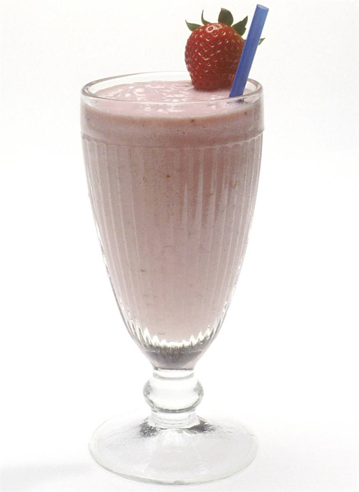
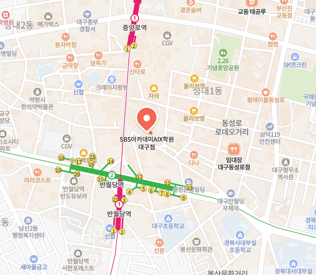

01
Cream Latte
부드러운 크림과 에스프레소가 어우러진 시그니처 라떼
6,500


MELLOW BEAN은 편안한 공간에서 좋은 커피와 디저트를 즐길 수 있는 작은 카페입니다. 노트북 자리보다 대화하기 좋은 자리를 먼저 생각했습니다.
| 주소 | 대구광역시 중구 멜로우로 12 |
|---|---|
| 영업시간 | 매일 10:00 – 21:00 |
| 휴무 | 매주 월요일 |
| 문의 | hello@mellowbean.com · @mellowbean |


노트북 자리보다
대화하기 좋은 자리를
먼저 생각했습니다.
대구 중구 · 2021년부터
테이블 여섯 개짜리 작은 카페
원두 볶는 날 · 매주 화요일과 금요일
부드러운 크림과 에스프레소가 어우러진 시그니처 라떼
6,500진한 마스카포네 크림과 커피 향을 담은 수제 티라미수
7,000레몬과 허브를 사용한 상큼한 시그니처 에이드
6,000원두는 매주 화요일과 금요일에 조금씩 볶습니다.
대구광역시 중구
멜로우로 12
매일 10:00 – 21:00 · 매주 월요일 휴무

MELLOW BEAN